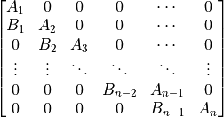
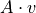
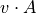
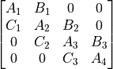

pyzag.chunktime
Functions and objects to help with blocked/chunked time integration.
- These include:
Sparse matrix classes for banded systems
General sparse matrix classes
Specialized solver routines working with banded systems
- class pyzag.chunktime.BidiagonalForwardOperator(*args, inverse_operator=<class 'pyzag.chunktime.BidiagonalThomasFactorization'>, **kwargs)
A batched block banded matrix of the form:

that is, a blocked banded system with the main diagonal and first lower block diagonal filled
- We use the following sizes:
nblk: number of blocks in the square matrix
sblk: size of each block
sbat: batch size
- Parameters:
A (torch.tensor) – tensor of shape (nblk,sbat,sblk,sblk) storing the nblk diagonal blocks
B (torch.tensor) – tensor of shape (nblk-1,sbat,sblk,sblk) storing the nblk-1 off diagonal blocks
- forward(v)
 in an efficient manner
- Parameters:
v (torch.tensor) – batch of vectors
- inverse()
Return an inverse operator
- matvec(v)
in an efficient manner
- Parameters:
v (torch.tensor) – batch of vectors
- to_diag()
Convert to a SquareBatchedBlockDiagonalMatrix, for testing or legacy purposes
- vecmat(v)
 in an efficient manner
- Parameters:
v (torch.tensor) – batch of vectors
- pyzag.chunktime.BidiagonalHybridFactorization(min_size=1)
Apply the hybrid factorization with a given min_size
- class pyzag.chunktime.BidiagonalHybridFactorizationImpl(*args, min_size=0, **kwargs)
A factorization approach that switches from PCR to Thomas
Specifically, this class uses PCR until the PCR chunk size is smaller than user provided minimum chunk size. Then it switches to Thomas.
- Parameters:
A (torch.tensor) – tensor of shape (nblk,sbat,sblk,sblk) with the main diagonal
B (torch.tensor) – tensor of shape (nblk-1,sbat,sblk,sblk) with the off diagonal
- Keyword Arguments:
min_size (int) – minimum block size, default is zero
- matvec(v)
Complete the backsolve for a given right hand side
- Parameters:
v (torch.tensor) – tensor of shape (nblk, sbat, sblk, 1)
- class pyzag.chunktime.BidiagonalOperator(A, B, *args, **kwargs)
An object working with a Batched block diagonal operator of the type
that is, a blocked banded system with the main diagonal and the first lower diagonal filled
- We use the following sizes:
nblk: number of blocks in the square matrix
sblk: size of each block
sbat: batch size
- Parameters:
A (torch.tensor) – tensor of shape (nblk,sbat,sblk,sblk) storing the nblk main diagonal blocks
B (torch.tensor) – tensor of shape (nblk-1,sbat,sblk,sblk) storing the nblk-1 off diagonal blocks
- property device
device, which is just the device of self.diag
- property dtype
dtype, which is just the dtype of self.diag
- property n
Size of the unbatched square matrix
- property shape
Logical shape of the dense array
- class pyzag.chunktime.BidiagonalPCRFactorization(*args, **kwargs)
Manages the data needed to solve our bidiagonal system via parallel cyclic reduction
- Parameters:
A (torch.tensor) – tensor of shape (nblk,sbat,sblk,sblk) with the main diagonal
B (torch.tensor) – tensor of shape (nblk-1,sbat,sblk,sblk) with the off diagonal
- matvec(v)
Complete the backsolve for a given right hand side
- Parameters:
v (torch.tensor) – tensor of shape (nblk, sbat, sblk)
- class pyzag.chunktime.BidiagonalThomasFactorization(*args, **kwargs)
Manages the data needed to solve our bidiagonal system via Thomas factorization
- Parameters:
A (torch.tensor) – tensor of shape (nblk,sbat,sblk,sblk) with the main diagonal
B (torch.tensor) – tensor of shape (nblk-1,sbat,sblk,sblk) with the off diagonal
- matvec(v)
Complete the backsolve for a given right hand side
- Parameters:
v (torch.tensor) – tensor of shape (nblk, sbat, sblk)
- class pyzag.chunktime.ChunkNewtonRaphson(rtol=1e-06, atol=1e-10, miter=200, throw_on_fail=False, record_failed=False, ignore_batches=None)
Solve a nonlinear system with Newton’s method where the residual and Jacobian are presented as chunked operators
- Keyword Arguments:
rtol (float) – nonlinear relative tolerance
atol (float) – nonlinear absolute tolerance
miter (int) – maximum number of iterations
throw_on_fail (bool) – if True, throw an exception on a failed solve. If False just issue a warning.
record_failed (bool) – if True, store the indices of the bad batches
ignore_batches (list of indices) – if provided, don’t check these batches in evaluating the stopping criteria
- not_converged(nR, nR0)
The logical to determine if we’ve converged in a particular time/batch
- Parameters:
nR (torch.tensor) – current residual
nR0 (torch.tensor) – original residual
- solve(fn, x0)
Actually solve the system
- Parameters:
fn (function) – function that returns the residual and Jacobian (as appropriate chunked operators)
x0 (torch.tensor) – initial guess, again properly chunked
- Returns:
solution
- Return type:
torch.tensor
- step(x, J, fn, R, take_step)
Take a simple Newton step
- Parameters:
x (torch.tensor) – current solution
dx (torch.tensor) – newton increment
fn (function) – function
R0 (torch.tensor) – current residual
take_step (torch.tensor) – which entries to take a step with
- class pyzag.chunktime.ChunkNewtonRaphsonLineSearch(*args, alpha=0.5, linesearch_iter=3, **kwargs)
Newton Raphson with backtracking line search
- Keyword Arguments:
rtol (float) – nonlinear relative tolerance
atol (float) – nonlinear absolute tolerance
miter (int) – maximum number of iterations
throw_on_fail (bool) – if True, throw an exception on a failed solve. If False just issue a warning.
record_failed (bool) – if True, store the indices of the bad batches
ignore_batches (list of indices) – if provided, don’t check these batches in evaluating the stopping criteria
alpha (float) – line search cutback
linesearch_iter (int) – maximum number of line search iterations
- step(x, J, fn, R0, take_step)
Take a Newton step with backtracking line search
- Parameters:
x (torch.tensor) – current solution
dx (torch.tensor) – newton increment
fn (function) – function
R0 (torch.tensor) – current residual
take_step (torch.tensor) – which entries to take a step with
- class pyzag.chunktime.LUFactorization(*args, **kwargs)
A factorization that uses the LU decomposition of A
- Parameters:
A (torch.tensor) – tensor of shape (nblk,sbat,sblk,sblk) with the main diagonal
B (torch.tensor) – tensor of shape (nblk-1,sbat,sblk,sblk) with the off diagonal
- forward(v)
Run the solve using the linear algebra type interface with the number of blocks and block size squeezed
- Parameters:
v (torch.tensor) – tensor of shape (sbat, sblk*nblk)
- class pyzag.chunktime.SquareBatchedBlockDiagonalMatrix(data, diags)
A batched block diagonal matrix of the type

where the matrix has diagonal blocks of non-zeros and can have arbitrary numbers of filled diagonals
Additionally, this matrix is batched.
- We use the following sizes:
nblk: number of blocks in the each direction
sblk: size of each block
sbat: batch size
- Parameters:
data (list of tensors) – list of tensors of length ndiag. Each tensor has shape
(nblk-abs(d),sbat,sblk,sblk)where d is the diagonal number provided in the next inputdiags (list of ints) – list of ints of length ndiag. Each entry gives the diagonal for the data in the corresponding tensor. These values d can range from -(n-1) to (n-1)
- property device
device, as reported by the first entry in self.device
- property dtype
dtype, as reported by the first entry in self.data
- property n
Size of the unbatched square matrix
- property nnz
Number of logical non-zeros (not counting the batch dimension)
- property shape
Logical shape of the dense array
- to_batched_coo()
Convert to a torch sparse batched COO tensor
This is done in a weird way. torch recognizes “batch” dimensions at the start of the tensor and “dense” dimensions at the end (with “sparse” dimensions in between). batch dimensions can/do have difference indices, dense dimensions all share the same indices. We have the latter situation so this is setup as a tensor with no “batch” dimensions, 2 “sparse” dimensions, and 1 “dense” dimension. So it will be the transpose of the shape of the to_dense function.
- to_dense()
Convert the representation to a dense tensor
- to_unrolled_csr()
Return a list of CSR tensors with length equal to the batch size
- pyzag.chunktime.thomas_solve(lu, pivots, B, v)
Simple function implementing a Thomas solve
Solves in place of v
- Parameters:
lu (torch.tensor) – factorized diagonal blocks, (nblk,sbat,sblk,sblk)
pivots (torch.tensor) – pivots for factorization
B (torch.tensor) – lower diagonal blocks (nblk-1,sbat,sblk,sblk)
v (torch.tensor) – right hand side (nblk,sbat,sblk)